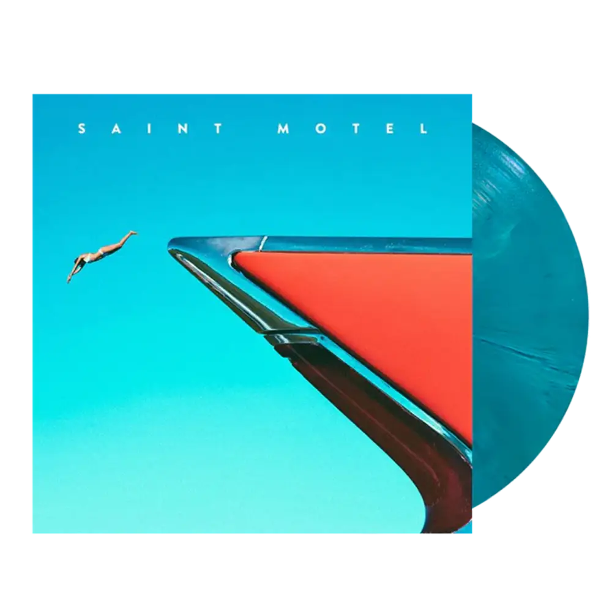
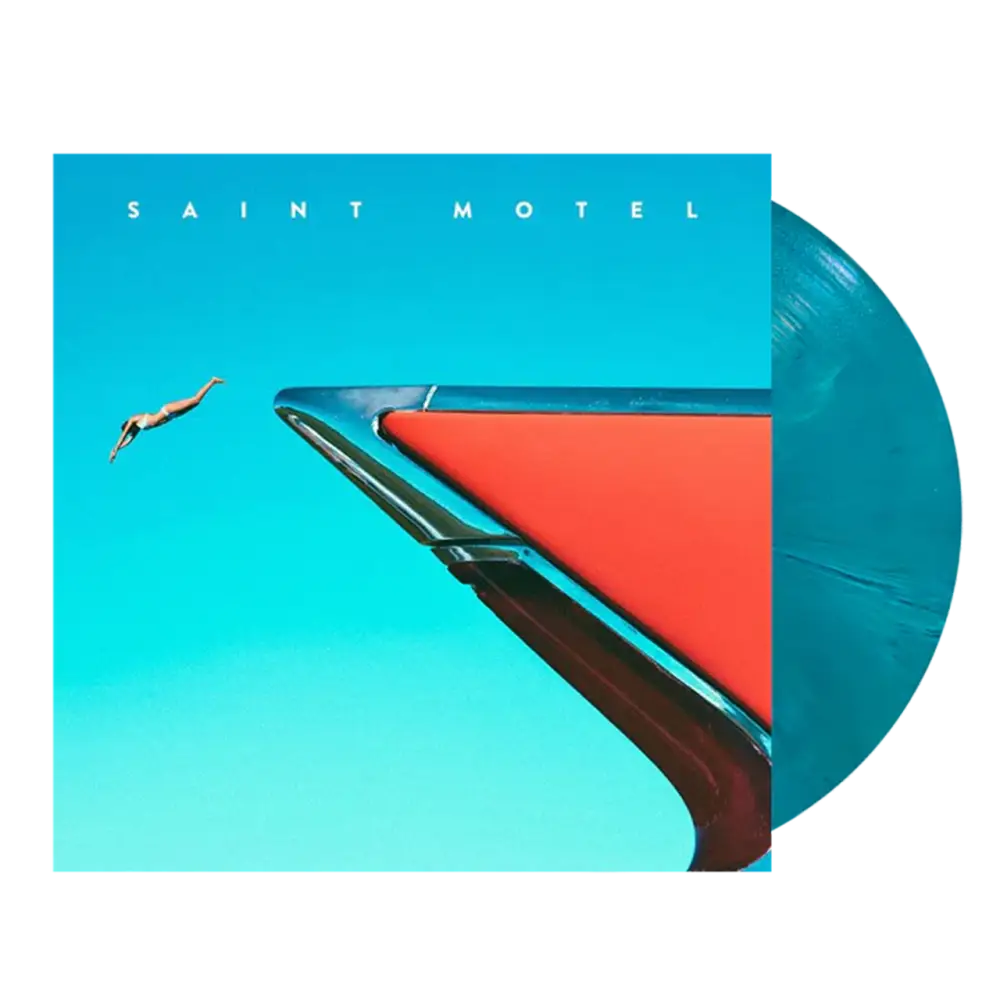

Mijn naam is Pim, ik ben 17 jaar oud en ik woon in Leiden. Als bijbaantje ben ik postbezorger in Leiden.
In mijn vrije tijd ga ik graag naar de bioscoop, luister ik naar muziek 💿 of ga ik hardlopen. Later wil ik dan ook graag de filmindustrie in, het liefste om camerawerk te doen. In ieder geval hoop ik op iets in de media wereld.
 
